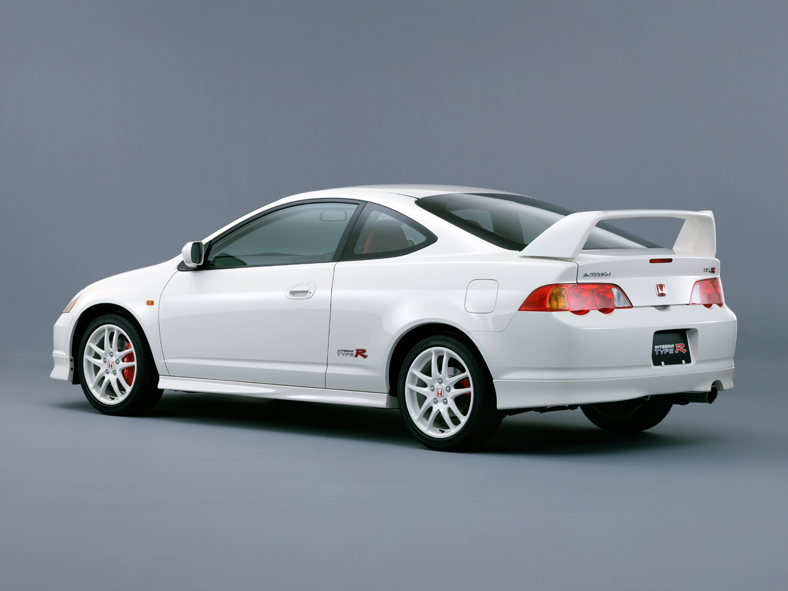

<!DOCTYPE html>
<html lang="en"></html>
<head>
  <meta charset="UTF-8">
  <meta http-equiv="X-UA-Compatible" content="IE=edge">
  <meta name="viewport" content="width=device-width, initial-scale=1.0">
  <title>Hondas</title>
<style>
@import url(css_styles.css);
</style>
</head>
<body>

<div class="header">
  <h1>HONDA</h1>
  <p>"There is no Honda without racing" - Soichiro Honda</p>
</div>

<div class="topnav">
  <a href="https://automobiles.honda.com/civic-type-r">New Honda Civic Type-R</a>
  <a href="#">Link</a>
  <a href="#">Link</a>
  <a href="#" style="float:right">Link</a>
</div>
<div class="card">
  <h2>1992 NSX Type-R</h2>
  
  <p>About this car</p>
  <p>The NSX was originally made to compete with brands such as Porsche and Ferrari and succeded in doing that. Honda decided that they could go even further with the NSX and made the 1992 Honda NSX Type-R. This new NSX was more performance oriented, it featured a more powerful engine, and a lighter body thanks to its all aluminum body. The Type-R has a 3 liter V6 engine that made 270 horsepower, and had a 5-speed manual transmission.  </p>
</div>
<div class="card">
  <h2>2001 DC5 Integra</h2>
  
  <p>About this car</p>
  <p>The DC5 Integra is the 4th generation of the Integra series. The DC5 wasn't made to compete with other brands like the NSX, it was purely made for the enjoyment of the owner. The DC5 has a K20A3 which made 220 horsepower. The DC5's engine also has VTEC that engaged somewhere between 6K - 7K rpm. VTEC is basically a system that gives the engine a boost at high rpms. </p>
</div>
<div class="card">
  <h2>1997 Honda Civic Type-R</h2>
  
  <p>About this car</p>
  <p>The EK9 Civic is the 6th generation of the civics, and like the NSX the civic is a Type-R. The EK9 was made to compete in box car racing and it performed very well. It initially sold for around $15,000 but nowadays it is being resold by people for around $20,000. It had a 1.6 liter B16B engine that amde 182 horsepower, and just like the Integra it has VTEC.  </p>
  
</div>
</body>
</html>